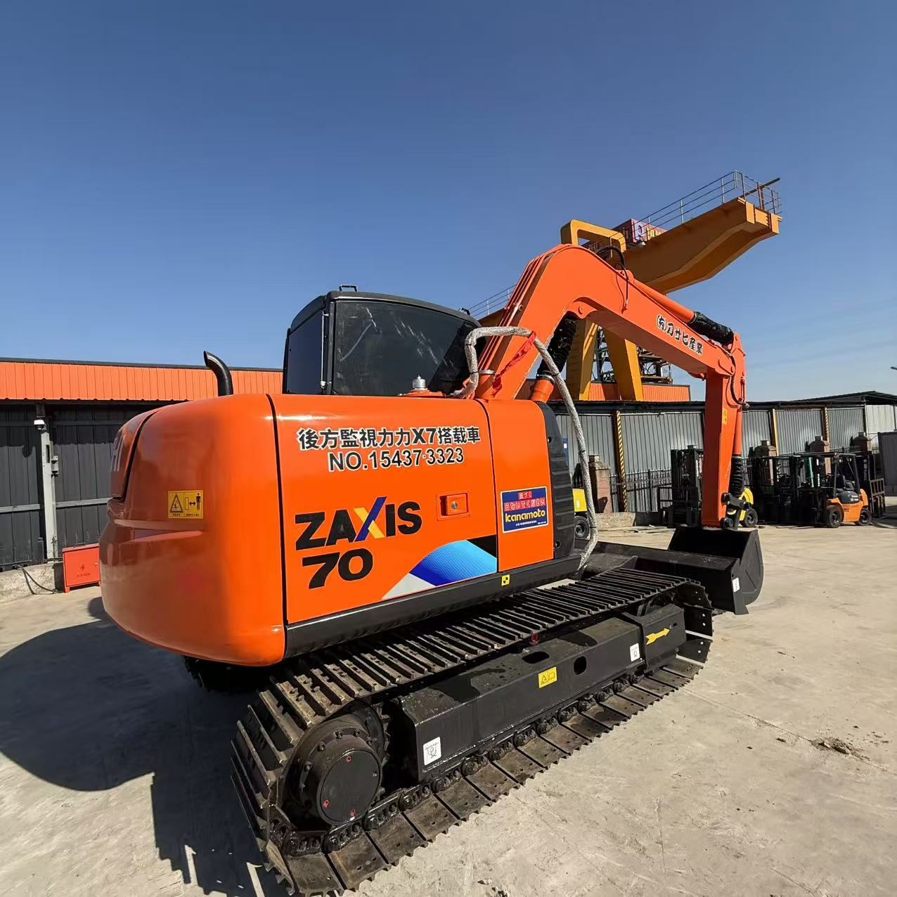

Refurbished Hitachi Zaxis 70 Excavator
The Hitachi Zaxis 70 Excavator is a compact, powerful, and highly efficient machine, perfect for a range of applications such as construction, landscaping, trenching, and material handling. Known for its excellent fuel efficiency, smooth operation, and robust hydraulic performance, the Zaxis 70 is ideal for working in confined spaces where larger machines cannot operate. A refurbished Zaxis 70 delivers the same high-level performance and reliability as a new unit, but at a significantly lower price, making it a smart investment for businesses and contractors.
Honestly, it's almost impossible to buy a brand new excavator from China. They either don't exist or are made in China. If a Chinese seller tells you their Caterpillar/Komatsu/Volvo/Kobelco/Hitachi is brand new, they're lying. Therefore, a refurbished excavator is your best bet.

Here are the detailed specifications for a refurbished Hitachi Zaxis 70 excavator (ZX70 or ZX70LC):
Operating Weight and Dimensions
- Operating Weight: ~10,900–11,500 lbs (4,950–5,200 kg)
- Transport Length: ~6.12 meters (20 ft 1 in)
- Transport Width: ~2.31 meters (7 ft 7 in)
- Transport Height: ~2.59 meters (8 ft 6 in)
- Tail Swing Radius: ~1.6–1.8 meters
- Track Width: ~450 mm standard
- Undercarriage: Compact or long carriage depending on variant
Engine and Powertrain
- Engine Model: Isuzu BB-4BG1T or AR-4JJ1X (Tier 2 or Tier 3 compliant)
- Rated Power Output: ~42–48 kW (56–64 hp) @ 2,000–2,200 rpm
- Fuel Tank Capacity: ~135–150 liters
- Travel Speed: ~2.8–5.0 km/h
- Swing Speed: ~10–11 rpm
- Drive Type: Hydrostatic with planetary final drives
Hydraulic System
- Main Pump Type: Load-sensing axial piston pumps
- Flow Rate: ~2 × 100–120 L/min
- System Pressure: Up to 28 MPa
- Hydraulic Oil Capacity: ~100–120 liters
- Efficiency Features:
- Boom/swing priority
- Regeneration circuits
- Auto hydraulic warm-up
Performance Metrics
- Bucket Capacity: ~0.25–0.35 m³ (SAE heaped)
- Max Digging Depth: ~4.2–4.5 meters
- Max Reach (Horizontal): ~6.5–6.8 meters
- Max Dump Height: ~4.5–4.8 meters
- Bucket Digging Force: ~55–60 kN
- Arm Digging Force: ~40–45 kN
Cab and Operator Features
- Cab Type: ROPS-certified enclosed cab
- Display: Analog gauges or basic LCD monitor
- Controls: Pilot-operated joysticks with auxiliary hydraulic circuit
- Comfort: Adjustable seat, optional HVAC
- Visibility: Wide glass area, LED work lights
Attachments Compatibility
- Standard Bucket: ~0.3 m³
- Optional Tools: Hydraulic breaker, auger, compactor, ripper
- Quick Coupler: Manual or hydraulic options available
Refurbishment Scope
Refurbished ZX70 units typically include:
- Engine Overhaul: Turbocharger, injectors, cooling system
- Hydraulic Restoration: Pump recalibration, valve block testing, hose replacement
- Electrical Diagnostics: Monitor, sensors, wiring harness
- Cab Reconditioning: Seat, joysticks, HVAC, repainting
- Structural Repairs: Boom/bucket welding, bushing replacement, undercarriage rebuild
Overview of the Hitachi Zaxis 70 Excavator
The Hitachi Zaxis 70 is a mid-sized, tracked hydraulic excavator that combines power with a compact design, making it perfect for projects that require maneuverability and performance in tight spaces. Whether you are digging, grading, or handling materials, the Zaxis 70 is engineered to perform with precision and efficiency. Its efficient engine and hydraulic system ensure minimal downtime and maximum productivity.
A refurbished Zaxis 70 goes through a thorough reconditioning process where worn parts are replaced, and the machine is restored to factory specifications. This gives businesses a cost-effective alternative to purchasing a new model while still maintaining top-tier performance.
Key Specifications of the Hitachi Zaxis 70 Excavator
The Zaxis 70 is designed to offer a perfect balance of power and compact size, making it a versatile choice for both small and medium-scale projects. Here are the key specifications:
-
Operating Weight: Approximately 7,200 - 7,800 kg (15,873 - 17,196 lbs)
-
Engine Power: 55 hp (41 kW)
-
Max Digging Depth: Up to 4.5 meters (14.8 feet)
-
Maximum Reach: 6.7 meters (22 feet)
-
Bucket Capacity: Typically 0.3 - 0.4 cubic meters (10.5 - 14.1 cubic feet)
-
Fuel Tank Capacity: Around 100 - 120 liters (26 - 32 gallons)
-
Travel Speed: Up to 5.5 km/h (3.4 mph)
These specifications give the Zaxis 70 the versatility to perform a variety of tasks such as trenching, material handling, and grading, all while keeping operational costs and fuel consumption low.
Performance and Efficiency of the Zaxis 70
The Zaxis 70 is engineered for outstanding performance while maximizing fuel efficiency. Its powerful engine and reliable hydraulic system ensure smooth operation, making it a solid choice for contractors looking to get the job done quickly and efficiently.
Performance Highlights:
-
Efficient Hydraulic System: The Zaxis 70 is equipped with a highly efficient hydraulic system that enables precise control of the boom, arm, and bucket. This system reduces cycle times and improves productivity, making it ideal for a variety of tasks including digging, lifting, and grading.
-
Fuel Efficiency: The Zaxis 70’s fuel-efficient engine allows businesses to save on operational costs. The engine is optimized for performance while keeping fuel consumption to a minimum, which is particularly beneficial for long-duration projects.
-
Compact and Powerful Digging: Despite its smaller size, the Zaxis 70 offers an impressive digging depth and reach, making it a highly capable machine for tasks such as trenching, material handling, and foundation digging.
-
Responsive Controls: The Zaxis 70 offers smooth, responsive controls that allow operators to perform tasks with precision and ease. The well-designed control system ensures operators can quickly and accurately perform work in tight spaces or on complex tasks.
Durability and Longevity of the Zaxis 70
Hitachi is known for building durable, high-quality machinery, and the Zaxis 70 lives up to that reputation. The excavator is designed to endure tough working conditions, ensuring that it will continue to provide reliable performance over many years of service.
Durability Features:
-
Sturdy Undercarriage: The Zaxis 70 is equipped with a durable undercarriage that is built to withstand rough and uneven terrain. The tracks, rollers, and sprockets are engineered for extended wear, ensuring smooth operation even on difficult ground.
-
Long-Lasting Engine: The Zaxis 70 is powered by a robust engine that can provide thousands of hours of reliable performance with proper maintenance. This long-lasting engine ensures that the excavator will continue to perform at its best even after years of service.
-
Durable Hydraulic System: The hydraulic system of the Zaxis 70 is designed to handle high-pressure conditions without failure. The system’s components are built for durability, minimizing downtime and reducing the need for frequent repairs.
Comfort and Safety of the Zaxis 70
Operator comfort and safety are key considerations in the design of the Zaxis 70. The excavator features an ergonomic cabin, noise and vibration reduction, and several safety components to enhance the operator's experience and ensure safety during operation.
Comfort and Safety Features:
-
Ergonomic Cabin: The cabin of the Zaxis 70 is designed to maximize operator comfort and reduce fatigue. It features an adjustable seat, user-friendly controls, and excellent visibility, all of which contribute to a more comfortable working environment.
-
Noise and Vibration Reduction: The cabin is equipped with features that reduce noise and vibration, creating a quieter and more comfortable working space. This is especially important for operators working long hours, as it helps improve focus and reduces stress.
-
Safety Features: The Zaxis 70 comes with Roll Over Protection (ROPS) and Falling Object Protection (FOPS) to ensure the safety of the operator in hazardous environments. The machine’s low center of gravity enhances stability, particularly on uneven or sloped terrain.
Versatility and Attachments for the Zaxis 70
The Hitachi Zaxis 70 is a highly versatile machine, capable of handling a wide range of tasks when equipped with the right attachments. Whether you need to dig, grade, demolish, or lift materials, the Zaxis 70 can be easily adapted to meet the demands of the job.
Common Attachments for the Zaxis 70:
-
Buckets: The Zaxis 70 can be fitted with a variety of bucket types, including general-purpose, heavy-duty, or grading buckets. These typically range from 0.3 to 0.4 cubic meters (10.5 - 14.1 cubic feet), making them ideal for digging, material handling, and grading tasks.
-
Hydraulic Breakers: For demolition and heavy material removal, the Zaxis 70 can be equipped with a hydraulic breaker, which is capable of breaking through concrete, rock, and other tough materials with ease.
-
Augers: Auger attachments are perfect for drilling precise holes for foundations, posts, or other applications requiring deep, narrow holes.
-
Grapples: Grapple attachments are used for lifting and handling materials such as logs, scrap metal, and debris.
-
Quick Couplers: Quick couplers allow for easy attachment changes without needing to leave the operator’s seat, minimizing downtime and improving overall productivity.
Benefits of Purchasing a Refurbished Hitachi Zaxis 70 Excavator
Opting for a refurbished Zaxis 70 provides numerous advantages for businesses, particularly those looking to save on costs without sacrificing quality.
Key Benefits:
-
Cost Savings: Refurbished Zaxis 70 machines are more affordable than new models, offering a high-performance machine at a fraction of the cost. Refurbishment ensures that the machine meets or exceeds factory specifications, providing the same performance as a new unit.
-
Thorough Reconditioning: Each refurbished unit undergoes a detailed inspection and reconditioning process, where worn-out parts are replaced with genuine Hitachi components. This ensures that the machine is reliable, efficient, and ready for service.
-
Warranty: Many refurbished Zaxis 70 excavators come with a warranty, providing peace of mind for businesses in case of unexpected issues. The warranty guarantees that the machine will perform well after purchase.
-
Environmental Responsibility: Purchasing refurbished equipment is an environmentally friendly choice. It helps reduce waste and extends the life of existing machinery, contributing to sustainability in the heavy equipment industry.
Maintenance Tips for the Hitachi Zaxis 70 Excavator
Proper maintenance is key to ensuring that the Zaxis 70 continues to perform at its best. Below are some essential maintenance recommendations:
Maintenance Recommendations:
-
Engine Maintenance: Regularly check and change the engine oil, replace air filters, and monitor coolant levels to keep the engine running smoothly and prevent overheating.
-
Hydraulic System: Inspect hydraulic hoses for leaks and replace hydraulic filters as needed. Regular maintenance of the hydraulic system ensures optimal performance.
-
Undercarriage: Regularly inspect the undercarriage, including the tracks, sprockets, and rollers, for wear. Timely replacement of damaged components helps prevent further issues and ensures smooth operation.
-
Attachments: Check attachments such as buckets and grapples for wear and tear. Replace or repair damaged parts to maintain their functionality and efficiency.
Conclusion
The Hitachi Zaxis 70 Excavator is a compact yet powerful machine that offers excellent performance and versatility for a wide range of applications. Purchasing a refurbished Zaxis 70 allows businesses to save on costs while still receiving a high-quality machine that performs just like new. With proper maintenance, the Zaxis 70 can continue to serve operators for many years, making it a smart investment for any construction, landscaping, or material handling project.
Our Commitment
- 2 years / 4000 hours warranty.
- EPA certified.
- No sweatshop labor.
Contacts

- [email protected]
- Youtube Instagram Facebook
- Navigation: G206 (Sishu Bridge) in Changfeng County, Hefei City, Anhui Province, 200 meters north to the east